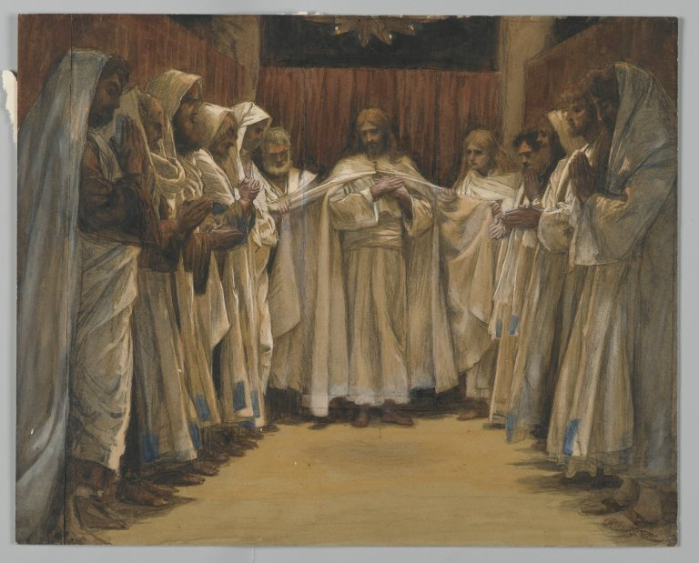

Juan 17 — La Traducción Mister

⚠ La faja blanca ininterrumpida que une cada mano de la fila, incluidas las de Jesús, es invención propia de Tissot —nada en el griego de este capítulo describe un objeto físico pasado de mano en mano. Pero pone en escena el propio argumento del capítulo de manera casi demasiado exacta: la oración pide cinco veces por separado que los discípulos «sean uno» (vv11, 21, 22 dos veces, 23), y Tissot pinta esa abstracción como una conexión física, literal y continua que recorre toda la sala. El Museo de Brooklyn cataloga la acuarela precisamente con este capítulo —Jesús levantando los ojos y orando por sus discípulos y «todos los que crean», el mismo ensanchamiento que este capítulo hace en el v. 20—, y no con la cena o el lavado de pies que lo enmarcan en los otros Evangelios.
_-_James_Tissot.jpg){kind=link}
Notas sobre esta traducción
⚠ «Padre, ha llegado la hora» (v1) cierra un anillo que este Evangelio abrió al comienzo mismo de la cena: lo que el narrador dijo en tercera persona —«sabiendo que su hora había llegado para pasar de este mundo al Padre» (Juan 13:1, ya en estas páginas)— lo dice ahora Jesús mismo, en oración, en el mismo tiempo perfecto. La misma declaración ya se había anunciado en la entrada triunfal («ha llegado la hora para que el Hijo del Hombre sea glorificado», 12:23, ya en estas páginas) y alcanzó su punto medio exacto un capítulo antes, partida en dos dentro de una misma frase —«viene la hora, de hecho ya ha llegado» (16:32, ya en estas páginas). Cuatro afirmaciones, una sola realidad, cerrando la distancia entre «viene» y «ha llegado» a lo largo de cinco capítulos, hasta que el reloj que Jesús mismo ha estado observando coincide por fin con el que el narrador puso en marcha. La oración que sigue se dirige al Padre, no a los discípulos —la primera vez desde que comenzó esta cena que Jesús se aparta de ellos para hablar.
«Esto es la vida eterna: que te conozcan a ti, el único Dios verdadero, y a Jesucristo, a quien tú enviaste» (v3) es el único lugar de todo este Evangelio que se detiene a DEFINIR «vida eterna», una frase que este libro ya ha usado CATORCE veces en seis capítulos anteriores sin decir jamás en qué consiste. La definición es relacional, no de duración —conocer, no simplemente durar—, y «el único Dios verdadero» es el quinto de los nueve usos que este Evangelio hace de alēthinós, lo auténtico frente a lo falso, junto a la luz verdadera, los adoradores verdaderos, el pan verdadero y la vid verdadera (todos ya en estas páginas).
⚠ «La gloria que yo tenía junto a ti antes de que el mundo existiera» (v5) afirma la preexistencia personal con la misma llaneza con que este Evangelio afirma cualquier cosa —no una gloria recibida en algún momento, sino una ya poseída «antes que el mundo fuera», dicha en el mismo aliento que la propia frase de apertura, «el Verbo estaba con Dios» (Juan 1:1, ya en estas páginas, todavía no en español). TNM 1987 lee «antes que el mundo fuera» y la revisión de 2019 «antes de que el mundo existiera»; NVI coincide con la revisión de 2019, «antes de que el mundo existiera» —las dos ediciones de la TNM, separadas por más de treinta años, terminan exactamente donde ya había llegado la NVI.
«Han guardado tu palabra» (v6) abre una serie de cuatro usos del verbo tēréō en este capítulo —aquí de lo que han hecho los discípulos, y luego tres veces de lo que Jesús y el Padre hacen POR ellos («guárdalos», v11; «yo los guardaba», v12; «guárdalos del maligno», v15)— un mismo verbo que pasa de la pequeña fidelidad de los discípulos a la fidelidad mucho mayor que los sostiene.
«Todo lo mío es tuyo, y lo tuyo es mío» (v10) es un quiasmo llano en el orden griego de las palabras —ta ema panta sa estin kai ta sa ema, mío-tuyo / tuyo-mío—, que declara la posesión mutua total entre el Padre y el Hijo en el mismo aliento en que la oración se vuelve, por primera vez, hacia los discípulos que están a punto de recibir el beneficio de ella. RV60 conserva el espejo, «lo mío es tuyo, y lo tuyo mío»; NVI lo deshace en dos frases completas, «todo lo que yo tengo es tuyo y todo lo que tú tienes es mío», que dice lo mismo y pierde la forma.
⚠ «He sido glorificado en ellos» (v10) es un tiempo perfecto, dicho de los discípulos, antes de que haya sucedido siquiera la cruz que este libro trata en otros lugares como el momento mismo de la glorificación (12:23, ya en estas páginas) —la misma gramática que la propia nota de este proyecto sobre Juan 16:33 ya señaló, una victoria declarada resuelta de antemano, por delante del suceso que la asegurará visiblemente.
⚠ «Que sean uno» (v11) es la primera de CINCO veces que se dice la palabra hén, «uno», entre el v11 y el v23 (11, 21, 22 dos veces, 23) —un conteo que cualquier lector puede verificar por sí mismo—, y cada repetición añade una cláusula que la anterior no tenía, hasta la declaración más completa del v23. Esta traducción mantiene el simple «uno» cada vez, sin variar el español, para que la repetición quede visible tal como el griego sigue repitiéndola.
⚠ «El hijo de la destrucción» (v12) nombra a Judas sin nombrarlo —un modismo semítico («hijo de X» por «uno caracterizado por X») que este libro usa solo aquí, y el ÚNICO otro uso en todo el Nuevo Testamento de la frase idéntica es del hombre de iniquidad al final de los tiempos (2 Tesalonicenses 2:3, todavía no en estas páginas). «Para que se cumpliera la Escritura» usa la fórmula exacta de cumplimiento que este Evangelio ya usó una vez antes, del mismo Judas: «el que come mi pan ha levantado contra mí su talón» (Juan 13:18, citando el Salmo 41:9, ya en estas páginas) —la misma traición, nombrada con la misma fórmula, desde dos puntos distintos de la misma larga noche.
«Guárdalos del maligno» (v15) traduce tou ponērou con la frase idéntica que esta traducción ya usa en el Padrenuestro —«líbranos del maligno» (Mateo 6:13, ya en estas páginas, todavía no en español)—, la lectura masculina frente al neutro igualmente posible, «el mal» en general, mantenida igual en ambos lugares por la misma razón: un pedido de ser guardado DE alguien suena más natural que un pedido de ser guardado de una abstracción.
Hagiázō, «santificar», se dice TRES VECES en estos tres versículos (17, 19 dos veces) —de los discípulos, por medio de la verdad; luego de Jesús mismo, que se consagra a sí mismo; luego de los discípulos otra vez, como resultado de esa autoconsagración. Es el verbo idéntico detrás de la propia línea de apertura del Padrenuestro en esta traducción, «sea santificado tu nombre» (Mateo 6:9, ya en estas páginas, todavía no en español) —el mismo verbo que pide, allí, que el nombre de Dios sea apartado, y aquí, que el propio pueblo de Dios sea apartado por el mismo medio, la verdad.
«Así como tú me enviaste al mundo, yo también los he enviado al mundo» (v18) usa un solo verbo, apostéllō, para los dos envíos, sin ninguna distinción de rango marcada en la gramática —la misión entregada en los mismos términos en que fue recibida.
⚠ «Por ellos me santifico» (v19) cambia de preposición respecto al resto de la oración, y el cambio es fácil de perder en español: en todo el resto Jesús pide perí autōn, «en cuanto a» o «acerca de» ellos (vv9, 20, mantenido como «en cuanto a» en esta traducción para que la palabra quede visible), pero aquí, una sola vez, es hypér autōn, «por ellos», «a favor de» ellos —la misma preposición que Pablo usa en otro lugar de Cristo muriendo hypér los impíos (Romanos 5:6). El cambio recae exactamente sobre el único verbo de este capítulo que no es un pedido al Padre sino algo que Jesús se hace a sí mismo.
⚠ «Los que crean en mí mediante la palabra de ellos» (v20) es el momento en que esta oración deja de tratarse solo de los once hombres presentes y empieza a tratarse de todo lector de esta página —un tiempo futuro que llega más allá de la resurrección, más allá de la propia composición del libro, hasta cualquiera cuya fe dependa del testimonio de los discípulos y no de haber visto a Jesús directamente. Este Evangelio declarará más adelante el mismo punto como una bendición directa sobre esta misma condición: «felices los que no han visto y sin embargo han creído» (Juan 20:29, ya en estas páginas).
La declaración plena de la oración por la unidad, alcanzada en el v23 —«yo en ellos y tú en mí, para que sean perfeccionados en uno»— usa el verbo idéntico, teleióō, que Jesús ya usó de su PROPIA obra terminada al abrir esta misma oración («habiendo terminado la obra que me diste que hiciera», v4): una tarea terminada, un pueblo terminado, el mismo verbo midiendo las dos cosas. Y cada una de las tres veces que se alcanza «uno» en este tramo (vv21, 22, 23), el PROPÓSITO declarado es la misma única cosa dicha de tres maneras distintas —que el mundo crea, que el mundo crea, que el mundo sepa—: la unidad ofrecida no como un fin en sí misma, sino como una evidencia que un mundo observador puede comprobar.
⚠ «Antes de la fundación del mundo» (v24) traduce el mismo sustantivo griego, katabolḗ, que esta traducción ya rindió igual en las palabras del rey a las ovejas («preparado para ustedes desde la fundación del mundo», Mateo 25:34) y en la propia bendición de apertura de Pablo («nos escogió en él antes de la fundación del mundo», Efesios 1:4, ambos ya en estas páginas) —tres escritores distintos, una frase fija. ⚠ El propio anaquel español en este versículo se divide en TRES frases distintas, no dos: RV 1909 lee «antes de la constitución del mundo»; RV60 lee «antes de la fundación del mundo»; y NVI lee «antes de la creación del mundo» —tres sustantivos españoles distintos (constitución, fundación, creación) para un solo sustantivo griego. Esta traducción sigue a la RV60, la más cercana al sentido literal de «un echar abajo» que da origen a una fundación.
«Para que VEAN mi gloria» (v24) pide vista, no solo creencia —un pedido que este capítulo no hace de ninguna otra cosa que trata—, y Jesús no lo extiende a los discípulos sin antes establecer, en el mismo aliento, que descansa sobre un amor anterior a ellos por completo.
La oración no concluye; simplemente se detiene, en una cláusula inconclusa sobre un amor que está «en ellos» de la misma manera en que Jesús ya está «en ellos» —sin amén de cierre, sin resumen del narrador, nada que marque un final. Las palabras siguientes de este libro son «cuando Jesús hubo dicho estas cosas, salió», directo hacia el huerto y el arresto —la última frase de la propia oración sigue abierta cuando el relato simplemente sigue adelante sin ella.
Patrones para llevar adelante.
⚠ Elecciones de traducción. Hagiázō (vv17, 19) se mantiene como «santificar», igual que la propia línea del Padrenuestro, «sea santificado tu nombre» (Mateo 6:9). Tou ponērou (v15) se mantiene como «el maligno», la lectura masculina, igual que en Mateo 6:13. Katabolḗ (v24) se mantiene como «la fundación del mundo», siguiendo a la RV60 frente a la RV 1909 y la NVI. Hén (vv11, 21, 22 dos veces, 23) se mantiene como el simple «uno» cada vez, sin variación, para que la repetición quede visible.
Ecos pagados. «Ha llegado la hora» (v1) cierra el anillo abierto en 13:1, respondido a mitad de camino en 12:23 y partido en dos en 16:32 (todos ya en estas páginas). «El único Dios verdadero» (v3) extiende alēthinós a su quinto uso citado. La fórmula de cumplimiento del v12 repite las palabras idénticas de Juan 13:18 sobre el mismo hombre (ya en estas páginas). «El maligno» (v15) repite la lectura idéntica ya elegida en Mateo 6:13 (ya en estas páginas, todavía no en español). Y teleióō (v23) responde al mismo verbo que Jesús usó de su propia obra terminada, cuatro versículos antes en este mismo capítulo (v4).
Ecos plantados. «Los que crean mediante la palabra de ellos» (v20) es respondido, tres capítulos después, por la propia bendición directa de este Evangelio sobre esa condición, «felices los que no han visto y sin embargo han creído» (Juan 20:29, ya en estas páginas). Y el final inconcluso de la oración corre directo hacia el arresto en el huerto al otro lado del Cedrón (Juan 18:1, ya en estas páginas), donde el discurso que comenzó tres capítulos atrás por fin se encuentra con la hora que ha estado nombrando desde Juan 13.
Ya publicado por delante de la secuencia, ahora plenamente incorporado: este capítulo cierra el Discurso de Despedida de tres capítulos (Juan 14, Juan 15, Juan 16) con la oración hacia la que los tres venían construyendo. El propio orden de este libro corre ahora sin interrupción desde el capítulo 1 hasta este capítulo.